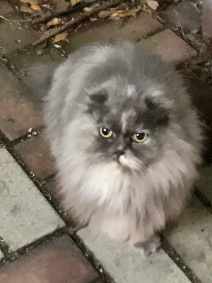
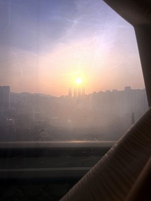
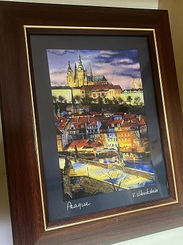
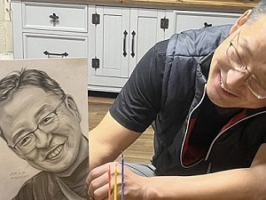
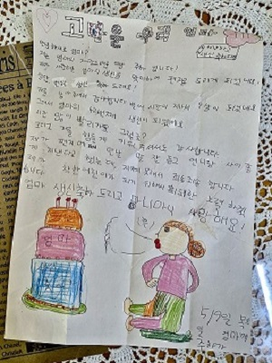
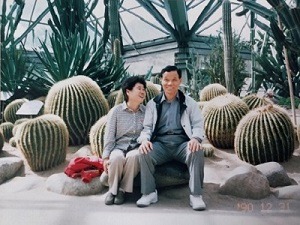
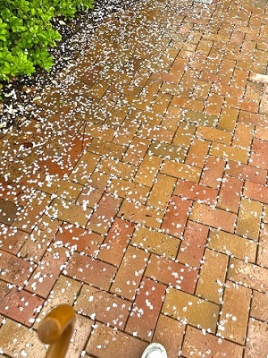
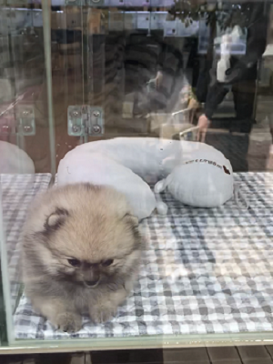
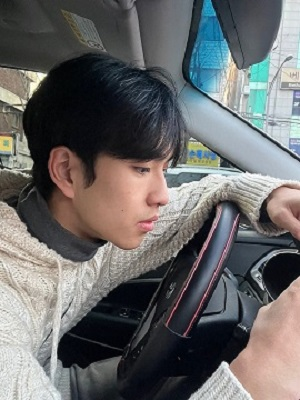

벚꽃

하교하는 길에 볼 수 있는 영대 정문 앞에 벚꽃이 만개한 모습이다. 벚꽃이 예쁘기도 했고, 작년 이맘때쯤 한창 열심히 미술 입시를 하고 있었던 기억이 났다. 입시 중에 힘들어하고 있었다. 그때 친구들과 잠깐 영대에 와서 활짝 핀 벚꽃을 보고 기분 전환을 하며 마음을 달랬던 적이 있었다. 현재 영대에 와서 이 모습을 보니 그때의 추억이 떠올랐다. 일 년이 지나 입학하고 난 후 작년과 똑같이 핀 벚꽃을 보는 기분이 달라서 인상깊었다.
길고양이
저녁이 되어서야 집 가는 길이었는데, 집 앞쪽 조금 한적하고 어두운 골목에서 이 고양이를 마주쳤다. 길고양이야 평소에도 자주 볼 수 있었다. 하지만 흔히 봐왔던 길고양이들과는 다르게 독특하고 예쁘게 생겼고, 주인이 있나 싶을 정도로 털이 깨끗하고 눈이 맑았다. 또 사람에 대한 거부감이 없어 보였다. 평소에 동물한테 관심이 많아 영상도 많이 보고 길고양이들에게 다가간 적도 많았다. 항상 도망 다녀 보기 힘들 뿐만 아니라 사진도 찍기 힘들었었는데 이 고양이는 길에서 마주친 사람한테도 거리낌 없이 다가오고, 다가가니 반겨줬다.
해가 지고 있는 사진
내 방에서 바라본 일몰 풍경이다. 이 집에 이사 온 지는 십 년이 조금 넘었는데 어릴 때는 해가 지는 것을 볼 수 있는 방을 언니가 사용했었다. 언니가 나가서 살기 시작했을 때는 내가 그 방을 침실방으로 밤에만 이용했어서 일몰을 볼 기회가 없었다. 최근에 이 방으로 책상까지 다 옮기고 나서 과제를 하다 햇빛이 너무 세길래 바라봤을 때의 풍경이 이 일몰이었다. 낭만적이기도 했고, 초등학생 시절 아빠가 일몰을 보는 것이 좋다며 이 집으로 이사 오자고 했던 추억이 떠올랐다.
그림 작품
엄마가 유럽여행을 갔다 오신 후에 나에게 선물로 주신 화가의 그림 작품이다. 방을 옮기다 이 작품을 오랜만에 발견하였다. 내 버킷리스트 중 하나가 유럽여행을 가는 것이며, 이 작품이 유럽 풍경의 낭만적인 분위기를 다 담아냈다. 그림을 보니 엄마가 다녀온 저 풍경의 분위기를 나도 느낄 수 있었다. 여러 그림을 그려봤지만, 유럽의 길거리 화가들은 돈을 내면 즉석에서 저렇게 그림을 그려준다고 한다. 그려본 입장으로써 얼마 안 되는 시간 안에 저렇게 그려낼 수 있는 게 대단하기도 했고 인상 깊었다.
아빠와 그림
아빠께 고마운 마음을 담아 아빠를 그렸다. 그리고 그 그림을 선물해 드렸을 때 아빠가 좋아하시고 있는 장면이다. 내가 열심히 그린 그림보다는 얼마 안 걸린 그림 한 장이지만 아빠가 그걸 받고 좋아하시는 모습이 더욱 마음에 와닿았다. 내가 가장 잘할 수 있는 것으로 마음을 표현한 것에 뿌듯함을 느꼈다. 비록 돈을 많이 쓰거나 오랜 시간 준비했던 큰 효도를 해 드린 건 아니다. 하지만 작고 사소한 효도에서도 부모님께서 행복을 느낀다는 사실을 깨달았다. 앞으로도 부모님께 사소한 것에서부터 먼저 시작해야겠다.
어릴 적 편지
내가 엄청 어릴 적 엄마께 쓴 편지이다. 방을 청소하면서 발견했다. 시간이 많이 흘렀지만 아직까지 보관하고 계셨던 엄마께 감동했다. 또 오래되어서 언제 쓴 건지 기억나지도 않는 추억이 실재한다는 것이 인상 깊었다. 어렸을 땐 그림을 진짜 못 그렸었던 것과 글자를 배운 적이 없어 독학해버린 내가 맞춤법을 고치려 노력했지만 다 틀려버리는 게 웃기기도 하였다. 그냥 쓴 한 통의 편지이지만 누군가에게는 평생 보관할 정도로 소중한 것이 될 수 있다는 것에 마음이 따뜻해졌다. 디지털 시대이지만 앞으로 소중한 사람들에게 편지를 써야겠다.
외할아버지와 외할머니
우리 외할아버지와 외할버니의 사진 한 장을 발견했다. 행복하게 웃고 계시는 할머니와 할아버지의 모습에 눈물이 날 것 같았다. 내가 입시하고 있을 시절 할머니께서는 아프실 때도 새벽같이 나가셔서 대학에 합격할 수 있게 해달라고 기도드리며 응원해 주셨다. 사진을 보고 추억이 떠오르기도, 그리운 감정이 들었다가 괜찮아지기도 하는 것을 보아 그 한 장에 큰 영향이 있다는 것을 알 수 있었다. 그때의 추억과 아직까지도 감사한 마음들이 떠오르며 엄마, 아빠, 그리고 여러 소중한 가족들, 친구들 사진도 많이 남겨놓아야겠다.
떨어진 벚꽃잎
비 오는 날이었다. 바닥에 떨어져 있는 벚꽃잎을 보니 예전에 비 와서 벚꽃이 지거나 떨어지면 굉장히 아쉬워했던 기억이 났다. 여름이 오는 게 싫었고 벚꽃을 계속 볼 수 있었으면 했었기 때문이다. 하지만 요즘은 대학생이 되고 현실을 바쁘게 살아가고 있다. 벚꽃이 핀 봄을, 꽃놀이를 즐길 틈도 없었다. 비가 와도, 벚꽃이 져도 그저 여름이 오겠구나 하며 아무렇지도 않았다. 꽃이 지는 것도 시간이 지나가는 것이라 생각하고 내년에 다시 필 때까지 대학교에서 어떤 목표를 달성하겠다 이런 마음가짐을 가졌다.
강아지
길을 지나가다 어떤 펫샵에서 발견한 강아지이다. 평소에 강아지를 좋아하기도 하고 작은 강아지가 얌전히 있는 것이 너무 귀여웠다. 하지만 귀여움을 느끼기보다는 안쓰러움이 더 컸다. 왜냐하면 인터넷이나 유튜브에서 펫샵의 문제점 같은 것을 종종 본 적이 있었기 때문이다. 여러 문제들이 많았다. 그중에는 강아지들이 펫샵의 진열대처럼 작은 공간에서 그리고 또 창문처럼 뚫려 있는 곳에서 불안감을 느끼기도 하고 잘 클 수 없다는 문제점이 있었다. 그게 생각나서 이 강아지의 표정이 괜히 슬퍼 보였고 불쌍했다.
운전하는 친구
조수석에 앉은 내가 보고 있는 친구이다. 내가 입시가 끝나고 대학에 합격하면 정말 하고 싶고 해야 하는 일을 정리한 적이 있다. 그중 하나가 운전하기이다. 그런데 시간이 없어서 운전면허조차 못 땄다. 그래서 나는 운전을 해본 적도 없고 어떻게 하는지도 모르는 상태이다. 원래 내가 할 수 없는 것을 다른 사람이 잘할 수 있을 때 그게 더 커 보이는 것이라고 생각한다. 친구는 벌써부터 운전면허를 따고 자기 차를 가지고 자유롭게 운전하고 다닐 수 있는 것이 부럽고 멋지다고 생각했다.